1INF · Laboratorio · mercoledì 04/11/2026 · si consegnano SEMPRE unit1.pas e lo screenshot
Ora 1 · Convertitore di misure (e recupero Sicurezza)
الساعة 1 · محوّل القياسات (وتعويض السلامة)
第 1 节 · 单位换算器（和安全课补习）
La pagina viene aggiornata spesso durante la lezione: premi F5 per vedere la versione nuova. · اضغط F5 لرؤية النسخة الجديدة. · 按 F5 查看新版本。
Chi sei?
Scrivi nome e cognome: serve al cruscotto per vedere a che punto sei.
Il tuo percorso · مسارك · 你的路线
Due percorsi nella stessa ora. A = prima un ripasso breve della Sicurezza (3 passi), poi Lazarus. B = Lazarus subito. Il Professore ti dice A o B: premi il tuo bottone. In tutti e due arrivi al convertitore di misure.
مساران في نفس الساعة. A = أولاً مراجعة قصيرة للسلامة (3 خطوات) ثم Lazarus. B = Lazarus مباشرة. يقول لك الأستاذ A أو B: اضغط زرّك.
同一节课有两条路线。A = 先做安全课的简短复习（3 步），再做 Lazarus。B = 直接做 Lazarus。老师告诉你选 A 还是 B，按你的按钮。
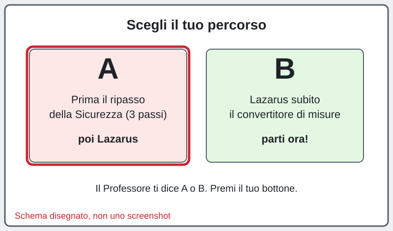
Sei bloccato? Scrivi la domanda nella casella dell'assistente in fondo alla pagina: ti risponde subito. Alza la mano solo se il PC non funziona (non si accende, niente rete, Lazarus non si apre).
إذا علقت، اكتب سؤالك في خانة المساعد أسفل الصفحة: يجيبك فوراً. ارفع يدك فقط إذا كان الحاسوب لا يعمل.
卡住了就在页面底部的助手框里写问题，它马上回答。只有电脑坏了才举手。
A1 · Ripasso in un minuto: le parole della Sicurezza
Leggi le parole e ricopia il riquadro giallo sul quaderno.
اقرأ الكلمات وانسخ المربع الأصفر في الدفتر.
读一读这些词，把黄色框抄在本子上。
pericolo = la cosa che può far male (un cavo per terra). danno = il male che è successo davvero. prevenzione = faccio una cosa PRIMA, così il danno succede meno spesso. protezione = se il danno succede, fa meno male (il casco). In azienda: il datore di lavoro è il primo responsabile; l'RLS lo eleggono i colleghi e parla per loro; il medico competente fa le visite.
خطر = الشيء الذي قد يؤذي (سلك على الأرض). ضرر = الأذى الذي حدث فعلاً. وقاية = أفعل شيئاً قبل ذلك فيحدث الضرر أقل. حماية = إذا حدث الضرر يؤلم أقل (الخوذة). في الشركة: صاحب العمل هو المسؤول الأول؛ الـ RLS ينتخبه الزملاء ويتكلم باسمهم؛ الطبيب المختص يجري الفحوصات.
危险源 = 可能造成伤害的东西（地上的电线）。伤害 = 真的发生了的伤。预防 = 事先做一件事，让伤害少发生。防护 = 伤害发生时痛得少一点（头盔）。在公司里：老板是第一责任人；RLS 由同事选出，替大家说话；职业医生做体检。
pericolo = può far male
danno = ha fatto male davvero
prevenzione = PRIMA: succede meno
protezione = DURANTE: fa meno male
RLS = lo eleggono i colleghi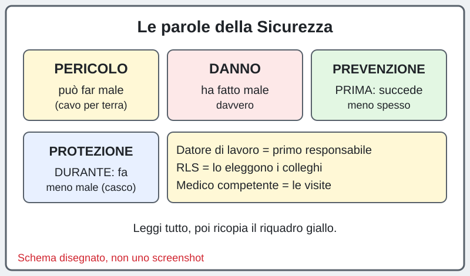
A2 · Quiz breve di Sicurezza (8 domande)
Premi il bottone verde, rispondi (3 risposte per domanda, sono domande facili) e premi Invia. Servono 6 giuste su 8. Se sbagli, puoi rifarlo: succede a tutti.
اضغط الزر الأخضر وأجب (3 إجابات لكل سؤال، أسئلة سهلة) ثم Invia. تحتاج 6 إجابات صحيحة من 8. إن أخطأت يمكنك أن تعيد: يحدث للجميع.
按绿色按钮，回答（每题 3 个选项，题目很简单），再按 Invia。8 题要答对 6 题。答错可以重做，每个人都会这样。
Apri il quiz di Sicurezza · افتح الاختبار · 打开测验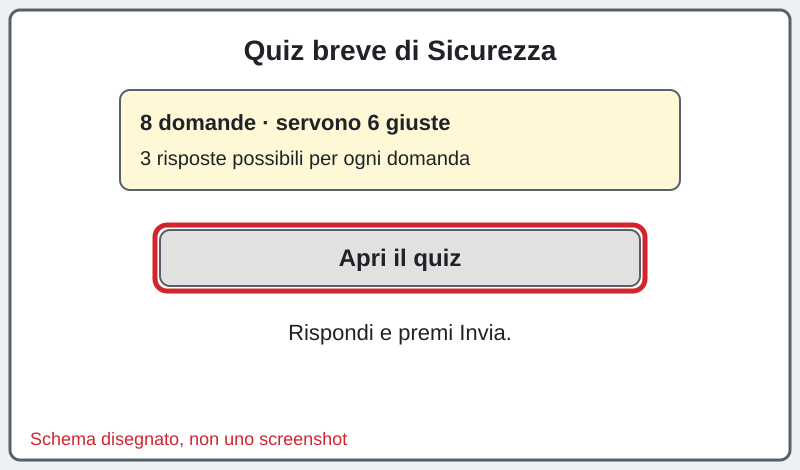
A3 · Ora tocca a Lazarus
Bravo, il recupero è fatto! Ora fai i passi di Lazarus qui sotto, uno alla volta. Obiettivo: entro la fine dell'ora il primo bottone funziona.
أحسنت! الآن افعل خطوات Lazarus أدناه واحدة واحدة. الهدف: قبل نهاية الساعة يعمل أول زر.
太好了，补习完成！现在一步一步做下面的 Lazarus 步骤。目标：这节课结束前第一个按钮能运行。
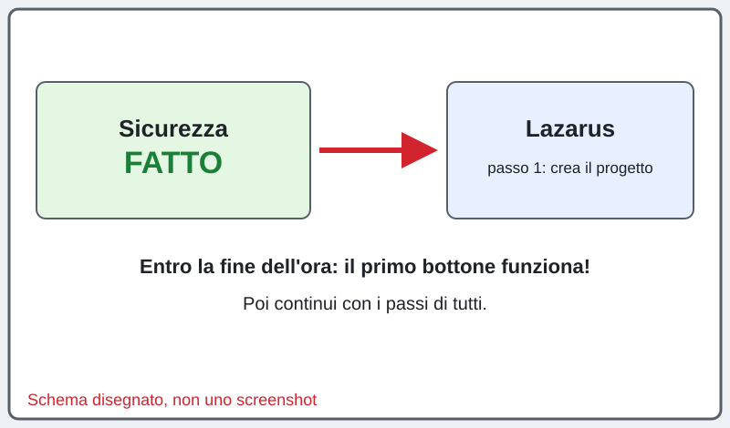
Crea il progetto
أنشئ المشروع
新建项目
In Lazarus: menu Progetto → Nuovo progetto… → Applicazione → OK. Compare una finestra grigia (Form1). FATTO!
في Lazarus: Progetto ← Nuovo progetto… ← Applicazione ← OK. تظهر نافذة رمادية (Form1).
在 Lazarus 里：Progetto → Nuovo progetto… → Applicazione → OK。出现灰色窗口（Form1）。

Salva il progetto in Documenti
احفظ المشروع في Documenti
把项目保存到 Documenti
Menu Progetto → Salva progetto con nome…. Clicca Documenti, poi Nuova cartella e dai alla cartella il nome convertitore. Entra nella cartella e scrivi convertitore in Nome file, poi Salva; per unit1.pas clicca ancora Salva.
Progetto ← Salva progetto con nome… . اضغط Documenti ثم مجلد جديد باسم convertitore. ادخل المجلد واكتب convertitore ثم Salva (مرتين).
Progetto → Salva progetto con nome…。点 Documenti，新建文件夹，名字 convertitore。进入文件夹，文件名写 convertitore，点 Salva（两次）。

Metti i componenti: Edit, Label e UN bottone
ضع المكونات: Edit و Label وزر واحد
放组件：Edit、Label 和一个按钮
Nella palette Standard clicca TEdit e poi sulla Form; poi TLabel; poi TButton. FATTO!
من لوحة Standard اضغط TEdit ثم على النافذة؛ ثم TLabel؛ ثم TButton.
在 Standard 面板点 TEdit 再点窗口；然后 TLabel；然后 TButton。
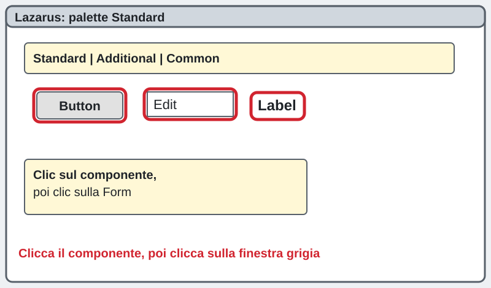
Cambia la scritta del bottone
غيّر كتابة الزر
改按钮上的字
Clicca il bottone. A sinistra, nell'Ispettore oggetti, trova Caption e scrivi Km in metri. Cancella il testo di Edit1 (proprietà Text). FATTO!
اضغط الزر. في Ispettore oggetti ابحث عن Caption واكتب Km in metri. امسح نص Edit1 (Text).
点按钮。在左边「Ispettore oggetti」找到 Caption，写 Km in metri。清空 Edit1 的 Text。
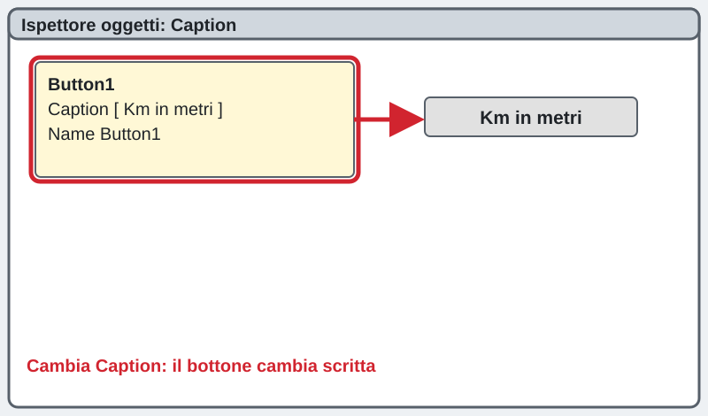
Apri il codice del bottone
افتح كود الزر
打开按钮的代码
Fai doppio clic sul bottone: si apre il codice. FATTO!
انقر مرتين على الزر: يفتح الكود.
双击按钮：打开代码。
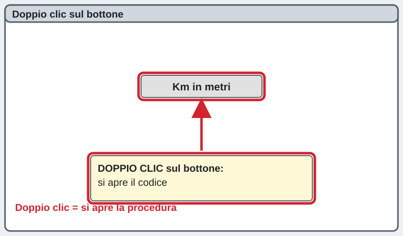
Scrivi il primo convertitore: km in metri
اكتب أول محوّل: كم إلى متر
写第一个换算：公里变米
Lazarus ha già scritto la riga procedure…, begin e end;: tu completa così. StrToInt trasforma il testo in numero, IntToStr il numero in testo.
StrToInt يحوّل النص إلى رقم، و IntToStr يحوّل الرقم إلى نص.
StrToInt 把文字变成数字，IntToStr 把数字变回文字。
procedure TForm1.Button1Click(Sender: TObject);
var
km, metri: Integer;
begin
km := StrToInt(Edit1.Text);
metri := km * 1000;
Label1.Caption := IntToStr(metri) + ' metri';
end;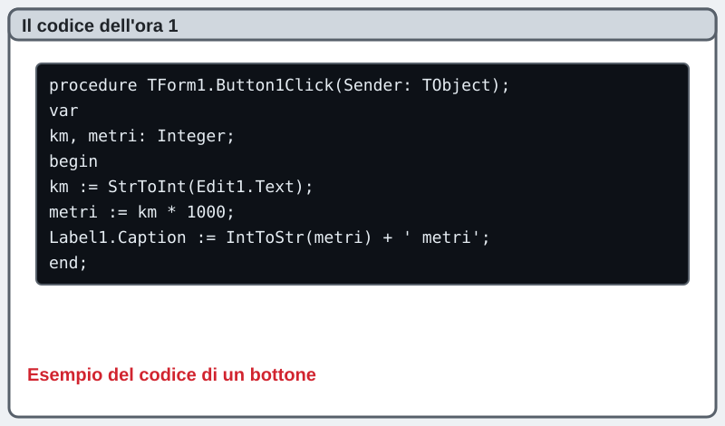
Provalo con F9
جرّبه بـ F9
按 F9 试试
Premi F9. Scrivi 5 e premi il bottone: deve comparire 5000 metri. FATTO! Prima vittoria!
اضغط F9. اكتب 5 واضغط الزر: يجب أن يظهر 5000 metri. أول انتصار!
按 F9。写 5，按按钮：应出现 5000 metri。第一次胜利！
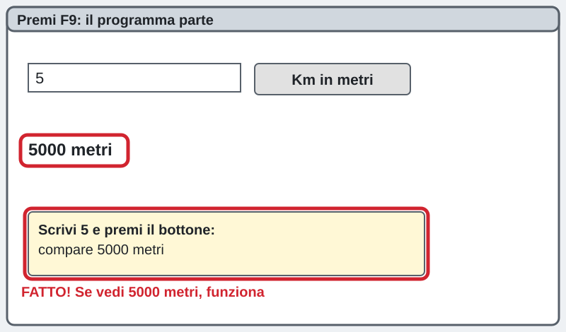
Quiz: testo contro numero (10 domande, 4 minuti)
Ora che hai visto che il bottone funziona: 10 domande su '5' + '3' contro 5 + 3. Premi il bottone verde, rispondi e premi Invia. Servono 7 giuste. Se hai fatto il percorso A e non fai in tempo, lo fai all'inizio dell'ora 2.
الآن وقد رأيت أن الزر يعمل: 10 أسئلة عن '5' + '3' مقابل 5 + 3. اضغط الزر الأخضر وأجب ثم Invia. تحتاج 7 إجابات صحيحة.
现在你看到按钮能运行了：10 道题，比较 '5' + '3' 和 5 + 3。按绿色按钮，回答后按 Invia。要答对 7 题。
Apri il quiz · افتح الاختبار · 打开测验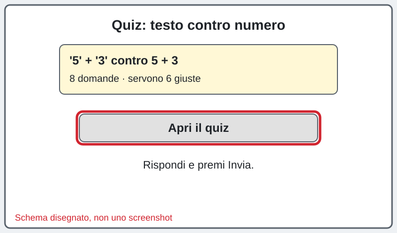
Secondo e terzo bottone: ore e euro
الزر الثاني والثالث: ساعات ويورو
第二、三个按钮：小时和欧元
Aggiungi due bottoni (Ore in minuti, Euro in centesimi) con lo stesso metodo. Il codice di Ore in minuti:
أضف زرين بنفس الطريقة. كود الساعات:
用同样的方法加两个按钮。小时的代码：
procedure TForm1.Button2Click(Sender: TObject);
var
ore, minuti: Integer;
begin
ore := StrToInt(Edit1.Text);
minuti := ore * 60;
Label1.Caption := IntToStr(minuti) + ' minuti';
end;
// Euro in centesimi: stessa cosa con * 100Quarto bottone: Celsius in Fahrenheit
الزر الرابع: سيلسيوس إلى فهرنهايت
第四个按钮：摄氏变华氏
div è la divisione senza virgola. La formula è C * 9 div 5 + 32. Prova con 100: deve fare 212.
div هي القسمة بدون فاصلة. الصيغة: C * 9 div 5 + 32. جرّب 100: النتيجة 212.
div 是不带小数的除法。公式：C * 9 div 5 + 32。试 100：得 212。
procedure TForm1.Button4Click(Sender: TObject);
var
c, f: Integer;
begin
c := StrToInt(Edit1.Text);
f := c * 9 div 5 + 32;
Label1.Caption := IntToStr(c) + ' gradi C sono ' + IntToStr(f) + ' gradi F';
end;Quinto bottone: minuti in ore e minuti
الزر الخامس: دقائق إلى ساعات ودقائق
第五个按钮：分钟变小时和分钟
div dà le ore intere, mod dà quello che avanza. Prova con 135: 2 ore e 15 minuti.
div تعطي الساعات الكاملة و mod تعطي الباقي. جرّب 135: ساعتان و15 دقيقة.
div 得到整小时，mod 得到剩下的。试 135：2 小时 15 分钟。
procedure TForm1.Button5Click(Sender: TObject);
var
minuti, ore, resto: Integer;
begin
minuti := StrToInt(Edit1.Text);
ore := minuti div 60;
resto := minuti mod 60;
Label1.Caption := IntToStr(minuti) + ' minuti sono ' + IntToStr(ore) + ' ore e ' + IntToStr(resto) + ' minuti';
end;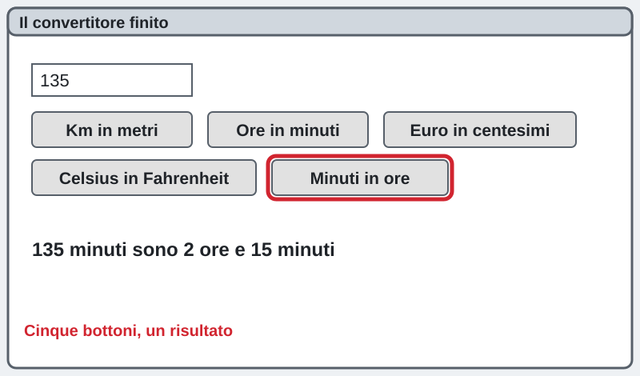
Fallo tuo
اجعله لك
做成你自己的
Cambia la scritta del bottone e il titolo della finestra (proprietà Caption della Form), scegli un colore (Color) e aggiungi UN bottone con una conversione che piace a te. FATTO!
غيّر كتابة الزر وعنوان النافذة واختر لوناً وأضف زراً بتحويل تحبه.
改按钮文字和窗口标题，选一个颜色，再加一个你喜欢的换算按钮。

Sul quaderno
في الدفتر
写在本子上
Ricopia sul quaderno il riquadro giallo.
انسخ المربع الأصفر في الدفتر.
把黄色框抄在本子上。
String = testo '53'
Integer = numero 53
div = divisione senza virgola 17 div 5 = 3
mod = quello che avanza 17 mod 5 = 2
C * 9 div 5 + 32 = Fahrenheit
Salva tutto
احفظ كل شيء
保存全部
Premi Ctrl + S. FATTO!
اضغط Ctrl + S. تمّ!
按 Ctrl + S。完成！

Fai lo screenshot
التقط لقطة الشاشة
截图
Con il programma che gira premi Win + Shift + S, trascina sul programma, incolla in Paint e salva nella cartella del progetto con il nome ora1_screenshot.png.
والبرنامج يعمل اضغط Win + Shift + S، ثم الصقها في Paint واحفظها في مجلد المشروع باسم ora1_screenshot.png.
程序运行时按 Win + Shift + S，在 Paint 里粘贴，保存到项目文件夹，文件名 ora1_screenshot.png。

Manda al prof
أرسل إلى الأستاذ
发给老师
Premi il bottone: scegli unit1.pas e lo screenshot e premi «Manda al prof». FATTO!
اضغط الزر: اختر unit1.pas ولقطة الشاشة ثم «Manda al prof».
按按钮：选择 unit1.pas 和截图，再按「Manda al prof」。
Manda al prof ora 1 · أرسل · 发送
La pagina viene aggiornata spesso durante la lezione: premi F5 per vedere la versione nuova.